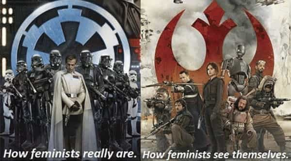

André is a young European who left his decaying country in 2012 for greener pastures. He enjoys exploring subterranean places, reading about a host of interconnected topics, and yearns for Tradition.


The question sounds abstract and cliché at first: do we have free will? If you look at the academic side of the question, what you will see is a long bibliography that seems only relevant to nerdy interests. However, the question has permeated public debates and leftist campaigns.
Feminists sometimes speak as if women have no agency. Women are all victims because muh patriarchy is choosing for them. Porn actresses, according to at least a bunch of harpies, do not choose: even though they sign their contracts and do everything by themselves, they are “used” by the porn industry.
Likewise, muh minorities would perform badly because they would have internalized some floating racism that stifles their abilities—doesn’t matter that this far-fetched theory was never proven or that blacks have been constantly found to be more self-confident than whites, not less.
Outside of leftist abuse and whitemaleophobic baiting, the question of whether we have a free will faculty or if we are the end result of smaller, impersonal mind processes where our personality dissolves has tremendous implications on what we do. Studies found that not believing in free will tended to stimulate cheating and numb patience.
The ancient Greeks believed we had an “internal sovereign” called egemonikon. To free it, we would have to meditate on our passions, beliefs, desires and so on as to free the “internal sovereign” from them: knowing what determines us and of options allows to be less determined.
No stupid fears like the fear of being rejected, no delusions like equality, no laziness considered too natural for us to work well. Instead, an enhanced and cleansed self, able to become what he is. This is the Greeks’ gnothi seauthon (know thyself) in a nutshell.
Conservative intellectual Thomas Sowell famously argued that liberals were unconstrained minds, with less predetermined beliefs, than conservatives. Liberals would believe more in change, conservatives more in immutability. This has been true to a certain extent, and liberals rushed to use it: “change” or “hope” means that leftism wins, both in fashion and reality, over a timid, hesitating, fearful and most importantly uncool conservatism.
However, since Sowell’s time of glory, things have considerably evolved. Today liberals and their RINO cuck allies are the most constrained and constraining camp ever. They are the ones who want to lock everyone up into their mad world of “gender”, white genocide, balkanized West, mandatory worship of a hallucinated “progress”, trigger warning, land whale supremacy and every monstrous stuff that makes up the liberal pantheon.
Liberal qualities have turned on their heads, and what liberals believe about themselves is either false or liable to so many exceptions it becomes window dressing.
The same libs who proudly claim they believe in equality love to think how their mean IQ is higher than the conservative voters’. They believe they are more creative and more intellectual, that is, more prone to bookishness and theorization. They will routinely talk of “love”, “justice”, universality, “we”, “humanity.” They claim to be open-minded, progressive, tolerant, and fancy themselves as fairer and less authorian. Is that true?
Not one bit.

This may be the most dishonest statement the leftists ever made up. Every individual of normal constitution is capable of both love and hatred. Couples of passions are a standard part of human nature. But somehow liberals managed to confuse the apparently positive aspect of love with being right, then managed to present themselves as the side of universal love. But by doing so they didn’t even care about stigmatizing the other political side as representing universal hatred.
Liberals do not love more than others. White liberals who feel guilt because they’re white and male, and virtue-signal as to compensate, suffer from a psychological issue. White guilt is a pathology, a mental virus that corrupts self-esteem and destroys the memories of all the good things the West gave to the world. Liberals do not love minorities—they need them to clean their shit for a smaller wage than white proles. Liberals are not free of hatred—they hate “the patriarchy”, they despise conservatives, they hate us.
The only thing a liberal truly loves is his (or her) ego, comfort, and own pleasures. Which is why liberals tend to be hedonistic and coward. The “love” they claim is just a mask for self-complacency.
Obey me. For love. Or you’re a Nazi!
This is what many of them said when they ushered Obama in power. They said so even when they despised the browbeaten, blue pills fed, “loser” men. Boomers who voted Obama said so while chastising millennials as “losers.” As we learned the hard way, when they win, we lose.
And many of those on the liberal train end up losing as well, for example when you’re black and you’re forced into an identity of perpetual aggrieved victim dependent on the State instead of being taught to manage your own goddamn life, or when you’re an upper middle class feminist and you end up raped and killed by the dark-skinned masses you always supported.
The “we want a world without losers” crowd always vote themselves in power, vote their own advantages, and do so at the expense of untold people. Just like using an ECA stack while lobbying for the prohibition of smart drugs. Doublethink at its finest.
Leftism has always been a particular group identity. From the eighteenth century philosophers to the younger upper middle class feminist of now, leftism has its codes, references, events and even saints. In truth, humanity only exists in a biological sense: one is human because one is a homo sapiens. Beyond that, the Earth has always been covered with different identities. The Left pretends to be different, but leftists have always been parts of societies or of the world. Which makes them as non-universal as any other identity.
Bourgeois bohemians love to talk about “culture” as their particular thing. They love to gloat about “openness” from the comfort of their flats or houses in a so-called glamour neighbourhood. Even when leftism was more akin to communism, said movement worked because it gave a purpose and a sense to the life of its members. That is, a particular purpose. No purpose is interesting or worthy when it ceases to be particular, identitarian, and thus different from the rest of humanity.
Leftism is an identitarianism. A cancer that developed from the West while chastising it. No wonder why the feminists’ fish and bicycle motto is intrinsically antisocial: leftism’s universality is a joke. And it is intolerant at our identitarianism.
Any group has common beliefs. Any group has prejudices. This is normal—and this is what leftists love to say they “went beyond” erroneously. I’ve often seen pompous students going at great lengths on their 50 shades of leftism or gender whereas talking of “the far right” as if people outside of the left were an homogeneous block. Those who speak like this know nothing of our side: even the Alt-Right is rather a big tent than an edifice.
Likewise, when the “libs r smarter” rule, which may be true if and only if certain conditions apply, becomes heralded as obvious, it is a prejudice—an excessive generalization that denies exceptions.
If you compare the mean IQ of a group of academics and the mean IQ of a group of plant workers, chances are, the former have a higher mean IQ. But does that mean that the academics are better human beings? That they are necessarily right? Does that mean that other high IQs who agree with plant workers should be ruled out as irrelevant?
The “smarter Left” myth is only true to the extent that the Left has taken over the institutions, only allowed its own inside, then used the institutions’ authority to claim smartness. Yes, that’s the very same people who pretend that race IQ measurements, which do not differ from class IQ measurements, are “racists” and invalid.
Leftists who have a high IQ use it to craft theories, narratives, and other misleading impressions to force and manipulate. Their pseudo-creativity is a smokescreen to mask the giant prison where they want to force society—and their own inability to get out of the matrix.
As everyone who ventured outside of cultural Marxism knows, no one on Earth is as bossy and domineering as the “tolerant” Left. Forced equality and communism were not “tolerant” projects. Forcing anal marriage, gender madness, mass immigration, white guilt, land whale/HR supremacy, banning words and reshaping whole identities through mass indoctrination is definitely not “tolerant.” No one else pretends to love the Other while being so intolerant at the political Other. At bottom, a leftist is a political xenophobic.
However, the Left has been crafty (or dishonest) enough to say that its intolerance would end intolerance, just like the communist genocidal mania would end all genocides, the freemason-propelled WW1 would end all wars, etc. Now it can safely be said that all these hopes were illusions, as Leftism always needs new targets to protest and harass. The only true hope for anything better lies in the death of cultural Marxism.
Antiracist fraudster Franz Boas was wrong. Sigmund Freud’s theory of Oedipus was wrong and likely build to hide a Jewish propensity for incest by blaming it on the children. “Minority” identities did not even exist before they were wholly constructed (“organized”) by Alinskyite figures who took all their inspiration in Marxism. Now these groups are like cancerous tumors, having no function yet stealing from a society they did not built. Margaret Mead was a fraud. Feminist “founders” had deep issues. And so on.
Leftism is all about manipulating the human psyche while making you indignant (or ashamed, depending on which role the narrative-crafters attribute to you) about being “oppressed.” Many of us were fed blue pills since our youngest infancy.
More often than not, we were taught everything would be possible, to be thrown into a world where everything is blocked, taught to be respectful when this made us cowards, taught to be cultivated when this is just made us more conditioned, taught to believe in equality because this is what the cultivated, successful individual do, and so on.
Cultural Marxism is not based on knowledge. It is based on sophisticated make-believe. Know the difference.
Read Next: If Leftist Ideology Is Correct, Why Are Liberals Using Dirty And Violent Tactics?